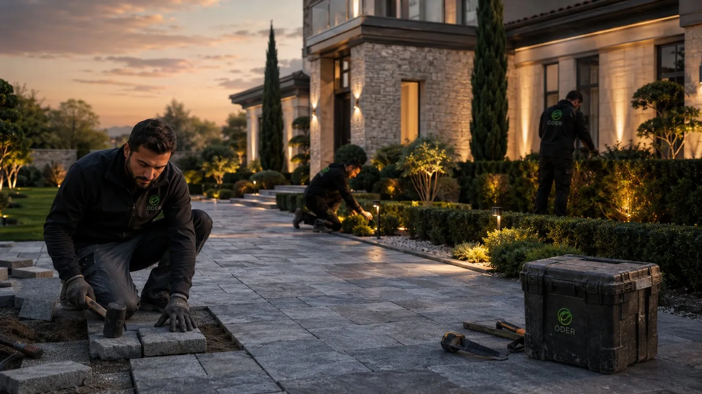
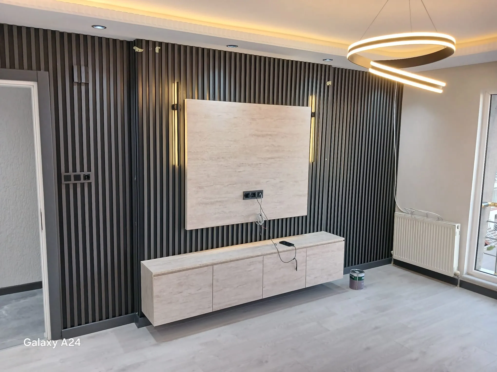

Do you work on projects outside Turkey?
Yes. We assess projects across the Balkans according to location, scope, production, transport and installation requirements.
Öder Mimarlık designs and coordinates bespoke furniture, kitchens, flooring, retail spaces and fair stands for homes, brands and hospitality projects.
Yes. We assess projects across the Balkans according to location, scope, production, transport and installation requirements.
Share the country, approximate size, requested service, reference images and target date.
Interior architecture, bespoke furniture, kitchens, flooring, living spaces, retail and textile fair stands are evaluated together with the project scope.
Öder Mimarlık designs and coordinates bespoke furniture, kitchens, flooring, retail spaces and fair stands for homes, brands and hospitality projects.
Create a personal concept board from a photo of your room and a style you like. Your photo stays in this browser.
Your inspiration photo never leaves your device.
This is an initial concept board that suggests a visual style and material direction; it is not an AI-redrawn version of your photo or an implementation project.
Öder Mimarlık designs and coordinates bespoke furniture, kitchens, flooring, retail spaces and fair stands for homes, brands and hospitality projects.
 01
01Living spaces that bring together comfort, colour and the small details that are yours.
 02
02Smart storage, good materials and clean lines.

03Let's choose texture and tone to suit the whole space.
 04
04Cheerful, functional rooms that leave room to grow.
 05
05It starts where you ask, “Is something like this possible?”
Survey, concept, materials and space-specific design support.
First we listen to you. Then together we discover the layout, textures and colours that fit your daily life. The result: a space that doesn't just look good, but feels good to be in.
Let's meet ↗Design that addsEvery project is a new story. What kind of place does your story want to live in?



Photos are selected from our site archive. Captions describe the area shown; they contain no project or client information.
Watch on-site details of shop, showroom, kitchen and storage furniture, each under its area title.
We are open to working with furniture brands, DIY retailers and retail teams on custom products, display units, shop furniture and repeatable interior solutions.
Bauhaus, IKEA ve benzeri markaların satın alma, kategori ve mağaza tasarım ekipleri; hedef ürün grubu, adet, teknik şartname ve teslimat bölgesini paylaşarak ön görüşme talep edebilir.
Start a corporate quote discussion ↗Choose the project type, area, material preference and country of installation. Prepare the scope in seconds and add it to your preliminary request.
The preliminary range is calculated from the project category, selected quality and country coefficient. This automatic estimate does not replace a site survey or a formal quote.
The price range shown is an approximate estimate based on the stated m² unit prices and coefficients; survey, transport, taxes, installation and supply conditions may change the final quote.
Let's assess your interior projects in Turkey and Europe together. Share your project's location and scope, and we'll discuss the way of working that suits you.
We get to know your needs, tastes, location and priorities.
Together we clarify the scope, the design approach and the next steps.
We carry out the agreed solution within the defined scope and process.
Have questions about your project? Describe it briefly in your first message and we'll review it together.
We work on interior architecture and space design, furniture and decoration, custom kitchen and cabinet design, flooring, living room, lounge and children's room arrangements, and special projects. We clarify your project's scope in the first meeting.
We review your project requests in Turkey and Europe. Share the location, project scope and the service you need, and let's discuss a suitable way of working together.
The estimate is calculated as area × category unit price × quality multiplier × country coefficient. For extreme projects over 100 m², a 10% consultancy fee is added. The result is an approximate range; the final quote is set after reviewing dimensions and scope.
Project location, the area or room you have in mind, the change you're aiming for, approximate timing and any inspiration images make a good start. If you have a budget, sharing it helps shape the proposal correctly.
Depending on your needs, design-focused support or work covering both design and implementation can be considered. Scope and service suitability are clarified in the first meeting.
Briefly describe your project's location, size and needs. After the information is reviewed, the scope and quotation process will be shared with you.
Tell us what you have in mind. In our first conversation we will discuss your project needs and possible next steps.